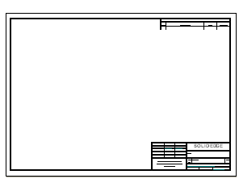
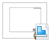
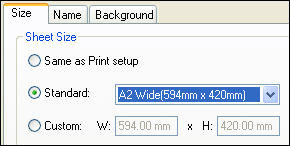
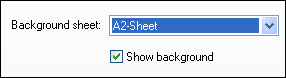
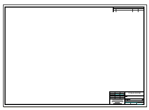
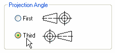

Set the drawing sheet size and projection angle

In the next few steps, specify the drawing sheet size and projection angle to use.
Solid Edge includes a wide range of sample drawing sheets to customize to meet company requirements.
-
Choose File menu→New→ISO Metric Draft.

The first step in beginning a new drawing is to set up the drawing sheet.
On the File menu, choose Settings→Sheet Setup.
In the Sheet Setup dialog box, on the Size page, set the Sheet Size option to A2 Wide (594 mm x 420 mm).

Click the Background tab, and then set the Background sheet option to A2-Sheet.

Click OK.

-
On the status bar at the bottom of the application window, choose Fit to fit the drawing sheet to the application window.
Mechanical drafting standards use either first-angle projection or third-angle projection for creating multi-view projections of a part on a drawing sheet.
-
The first-angle method is predominantly used by engineers and designers who follow ISO and DIN standards.
-
The third-angle method is predominantly used by engineers and designers who follow ANSI standards.
Solid Edge provides document templates for both projection-angle standards. For this tutorial, use third-angle projection. To learn more about document templates, see Creating documents and using templates
Click File menu→Settings→Options to open the Solid Edge Options dialog box
In the Solid Edge Options dialog box, click Drawing Standards.
On the Drawing Standards page, under Projection Angle, set the projection angle to Third.

Observe the other options on the Drawing Standards page.
Click OK to close the dialog box.
-
On the Quick Access toolbar, choose Save
 .
.